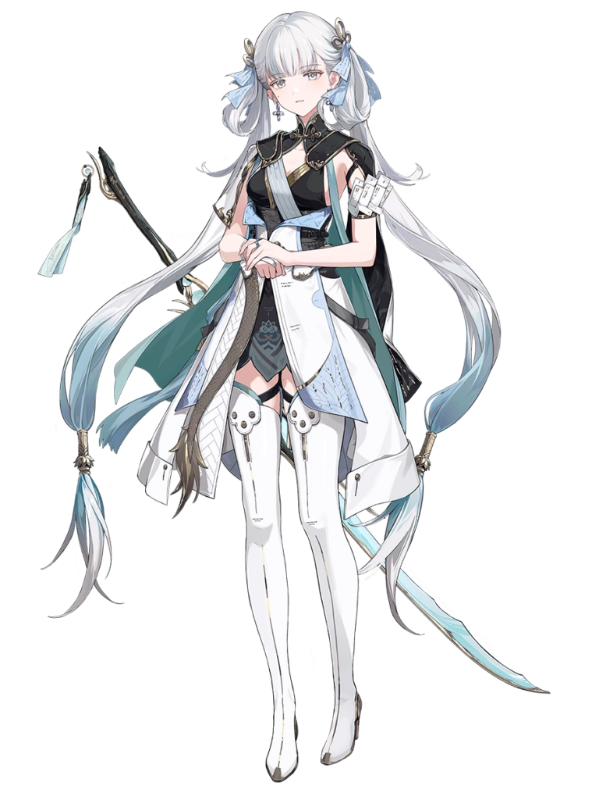
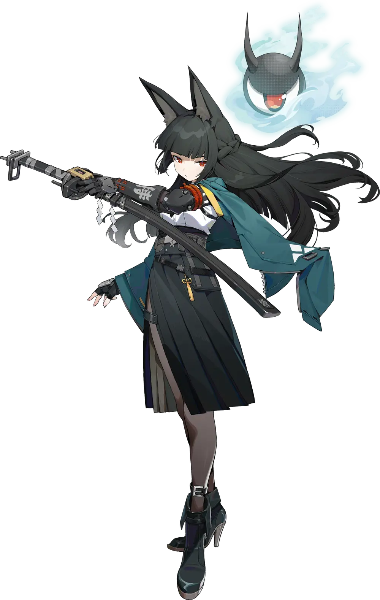

En esta pagina voy a presentar mis 3 personajes favoritos del mundo de los juegos gachas, los personajes en cuestion son; Castorice, Jinshi, Miyabi. Estos personjes comparten bastantes simulitudes entre ellos a pesar de que provienen de juegos diferentes. Castorice pertenece al juego Honkai Star Rail, Jinshi pertenece al juego Wuthering Waves, y Miyabi pertecene al juego Zenless Zone Zero. Honkai Star Rail y Zenless Zone Zero pertenecen ambos a la misma empresa: Hoyoverse.
Jinshi
En esta pagina voy a presentar mis 3 personajes favoritos del mundo de los juegos gachas, los personajes en cuestion son; Castorice, Jinshi, Miyabi. Estos personjes comparten bastantes simulitudes entre ellos a pesar de que provienen de juegos diferentes. Castorice pertenece al juego Honkai Star Rail, Jinshi pertenece al juego Wuthering Waves, y Miyabi pertecene al juego Zenless Zone Zero. Honkai Star Rail y Zenless Zone Zero pertenecen ambos a la misma empresa: Hoyoverse.
Hoshimi Miyabi
En esta pagina voy a presentar mis 3 personajes favoritos del mundo de los juegos gachas, los personajes en cuestion son; Castorice, Jinshi, Miyabi. Estos personjes comparten bastantes simulitudes entre ellos a pesar de que provienen de juegos diferentes. Castorice pertenece al juego Honkai Star Rail, Jinshi pertenece al juego Wuthering Waves, y Miyabi pertecene al juego Zenless Zone Zero. Honkai Star Rail y Zenless Zone Zero pertenecen ambos a la misma empresa: Hoyoverse.